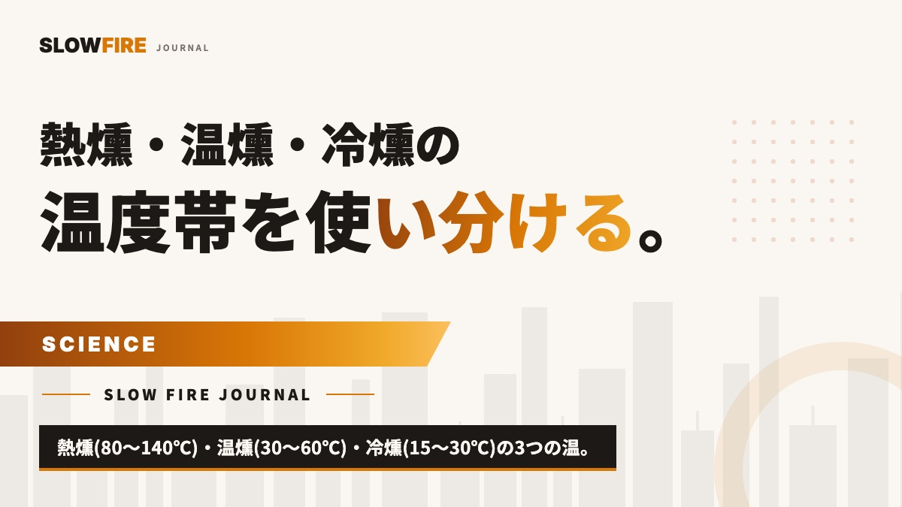

熱燻・温燻・冷燻の温度帯を使い分ける — 食材別スモーク早見ガイド
「燻製ってつまり煙をかければいいんでしょ？」と思っていたのに、いざやると生っぽかったり、逆にパサパサになったり。ありませんか。実はスモークは大きく3つの温度帯に分かれていて、熱燻(80〜140℃)・温燻(30〜60℃)・冷燻(15〜30℃)のどれを選ぶかで、仕上がりも保存性もまるで変わるんですよね。ここでは3つの違いと、食材ごとの中心温度・時間の目安を一枚の地図として整理していきます。

まず結論：燻製は「庫内温度」で3つに分かれる
燻製を混乱なくやるコツは、レシピの前に「自分は今どの温度帯でやろうとしているのか」を決めることです。庫内(グリルやスモーカーの中)の温度で、ざっくり3つに分かれます。
| 種類 | 庫内温度 | ねらい | 代表食材 | 保存性 |
|---|---|---|---|---|
| 熱燻(ホットスモーク) | 80〜140℃ | 火を通しながら香りをつける | ベーコン(加熱)・スペアリブ・鶏・ホットスモークサーモン | 要冷蔵・早めに食べる |
| 温燻 | 30〜60℃ | 半乾燥させつつ燻す・食感を締める | ジャーキー・チーズ(やや高め)・ロースハム系 | 数日〜1週間程度 |
| 冷燻(コールドスモーク) | 15〜30℃ | 加熱せず香りだけを移す | 生ハム的サーモン・自家製ベーコンの原木・チーズ・ナッツ | 塩漬け前提で比較的長い |
これだけは覚えておいてください。「熱燻は料理」「冷燻は香りづけ」「温燻はその中間」。この一言が分かれば、あとの数字は全部ここにぶら下がります。
なぜ温度帯で分けるのか — 煙・タンパク質・雑菌の関係
そもそもなぜ温度でこんなに変わるのか。理由は3つあります。
1. 煙の成分は温度で質が変わる
木が燃えるとき、200〜400℃あたりで香りのよいフェノール類やカルボニル化合物が出ます。逆にスモークウッド自体を高温で燃やしすぎると、苦味やエグ味のもとになる成分が増えるんですよね。だから食材の庫内温度が低くても、煙を出す発煙源(ウッドやチップ)はしっかり300℃前後で燻らせる、というのが基本です。「庫内は冷たいのに煙はちゃんと出す」——これが冷燻の技術的なキモです。
2. タンパク質は60℃を超えると縮む
魚や肉のタンパク質は、おおよそ60℃を超えると本格的に凝固・収縮を始めます。冷燻(15〜30℃)がサーモンを「生ハムのようなねっとり食感」に保てるのは、この線を越えないから。逆に熱燻(80〜140℃)は積極的に火を通して、ほろっとした加熱食感に仕上げる方向です。温燻(30〜60℃)は「火は通さないけど表面を少し締める」中間ゾーンなんです。
3. 危険温度帯を避ける必要がある
正直に言うと、ここが一番大事です。食品が傷みやすいのは10〜60℃、いわゆる危険温度帯。温燻・冷燻はまさにこの帯に長時間さらす手法なので、塩漬け(ソミュールやドライキュア)で水分活性と塩分濃度を先に下げておくことが絶対条件になります。塩をせずに冷燻だけやるのは、僕はおすすめしません。香りは付いても安全性が担保できないからです。
熱燻の手順 — いちばん手を出しやすい80〜140℃
初めての人にまずすすめたいのが熱燻です。要は「低めの温度で火を通しながら煙をかける」だけなので、ロー&スローの延長で考えられます。ツーゾーンファイア(炭を片側に寄せ、反対側を間接ゾーンにする配置)を作り、間接側に食材を置くのが基本です。
- ホットスモークサーモン：庫内90〜110℃で30〜45分、中心60℃で引き上げ。事前に塩3%+砂糖1%で6〜12時間キュア→表面乾燥(ピクル)1〜2時間。
- スペアリブ：庫内120〜125℃で3〜4時間、中心92℃。ラブをたっぷり振ってからインダイレクトへ。
- 鶏もも：庫内110〜130℃で1〜1.5時間、中心73℃。仕上げに直火で皮をパリッと。
- 自家製ベーコン(加熱型)：庫内90〜110℃で中心65℃まで。
発煙源はチップなら20〜30分ごとに補充、チャンク(塊)なら1〜2個で長く持ちます。煙は「うっすら青白い」状態がベスト。もくもくの白煙は不完全燃焼でエグ味が出るので、吸気を少し開けてやると落ち着きます。
温燻の手順 — 30〜60℃の締める燻し
温燻は正直いちばん扱いが難しい帯です。夏場は外気温だけで40℃近くまで上がってしまうので、季節を選びます。狙いは「半乾燥させながら香りを入れる」こと。ジャーキーや、しっとり系のロースハムに向いています。
- ビーフジャーキー：庫内50〜60℃で4〜6時間、厚さ5mmにスライスし塩分3%程度でマリネしてから。中心温度より「曲げてしなる乾き具合」で判断します。
- スモークチーズ(温燻寄り)：40〜50℃だとチーズが溶け出しやすいので、プロセスチーズでも45℃を超えないよう注意。冷燻寄りにする方が失敗が少ないです。
温燻は「発煙源の熱で庫内が上がりすぎる」のが最大の敵。炭やヒーターと食材の距離を離す、氷を入れたトレーを置く、といった温度を下げる工夫が要ります。ここが後述の冷燻テクニックとつながってきます。
冷燻の手順 — 15〜30℃、火を入れずに香りだけ
冷燻は「加熱ゼロ」。だから発煙と冷却を分離する仕組みが必須です。市販のコールドスモークジェネレーター(木のペレットを線香のようにじわじわ燃やす道具)を使うと、庫内をほぼ室温のまま長時間燻せます。外気温20℃以下の秋冬が本番です。
- コールドスモークサーモン：塩3%+砂糖1%で12〜24時間キュア→水抜き・ピクル乾燥半日→庫内20〜25℃で6〜12時間燻煙。中心は生のまま。
- スモークチーズ(冷燻)：庫内20〜25℃で2〜4時間。燻したては刺激が強いので、ラップして冷蔵庫で2〜3日「なじませる」と角が取れます。
- ナッツ・卵・塩：20〜30℃で1〜3時間。香りづけだけなら短時間でOK。
冷燻の要注意点は繰り返しになりますが安全管理。塩漬けで先に締める、外気温が高い日はやらない、できあがったら冷蔵する。これを守れば怖くありません。自家製ベーコンの原木を冷燻で仕込む工程も、この延長線上にあります。
よくある失敗と回避策
| 症状 | 原因 | 対策 |
|---|---|---|
| エグい・苦い | 白煙(不完全燃焼)を当てすぎ | 吸気を開け青白い煙に。燻煙時間を半分に |
| 冷燻なのに火が入った | 発煙源の熱が庫内に伝わった | ジェネレーターを使い発煙と食材を離す・氷トレー |
| サーモンがパサつく | 熱燻で中心が65℃超 | 60℃で引き上げる。プローブ必須 |
| 表面が乾かず煙が乗らない | ピクル(乾燥)不足でベタつく | 燻煙前に1〜2時間、表面を触ってサラッとさせる |
| 味がぼやける | 塩・下味不足 | ドライキュアやラブで先に下地を作る |
ちなみに庫内温度計を信じすぎないこと。フタの温度計は実際の食材位置より高く出がちなので、プローブを食材の横に置いて実測するのが確実です。
3つを混ぜる応用 — スモーク→加熱の合わせ技
慣れてきたら「低温で香りを入れてから、高温で火を通す」二段構えが強力です。たとえばサーモンを20〜25℃で1時間冷燻して香りを乗せ、その後90℃まで庫内を上げて中心60℃まで加熱すれば、香り豊かなホットスモークサーモンになります。ベーコンも、冷燻で燻香をたっぷり入れてから熱燻で中心65℃まで持っていく、というのが定番の流れです。
ラブとの相性も触れておくと、熱燻は砂糖入りのラブがきれいにキャラメリゼしてくれるので、Low n Slow BasicsやButcher's Axeのような甘みと深みのある配合が映えます。逆に冷燻は素材の香りを立たせたいので、塩・胡椒ベースのシンプルな下味に留めるのが個人的にはおすすめです。
まずは熱燻でホットスモークサーモンあたりから始めて、温度計に慣れてきたら冷燻に挑戦する。この順番だと失敗が少なくて、火と向き合う時間そのものが楽しくなってくると思いますよ。
よくある質問
熱燻・温燻・冷燻で、初心者はどれから始めるべきですか？
熱燻(80〜140℃)からがおすすめです。火を通しながら香りをつける手法なので、ツーゾーンファイアと中心温度計さえあれば、ロー&スローの延長で扱えます。ホットスモークサーモン(庫内90〜110℃、中心60℃)あたりが失敗しにくく入門に向いています。冷燻は温度管理と安全管理のハードルが上がるので、慣れてからで十分です。
冷燻で食中毒が心配です。安全にやるコツは？
冷燻は10〜60℃の危険温度帯に食材を長く置くため、必ず塩漬け(塩分3%前後のキュア)で水分を抜き、塩分濃度を上げてから燻します。外気温20℃以下の秋冬に行い、できあがったらすぐ冷蔵。塩をせず香りづけだけの冷燻は避けてください。この3点を守れば大きなリスクは抑えられます。
庫内温度が下がらず冷燻や温燻になりません。どうすれば？
発煙源の熱がそのまま庫内に伝わっているのが原因です。ペレットを線香状に燃やすコールドスモークジェネレーターを使い、発煙と食材の位置を離すのが一番確実です。加えて、庫内に氷を入れたトレーを置く、フタの吸気を少し開けて熱を逃がす、といった工夫で15〜30℃をキープしやすくなります。